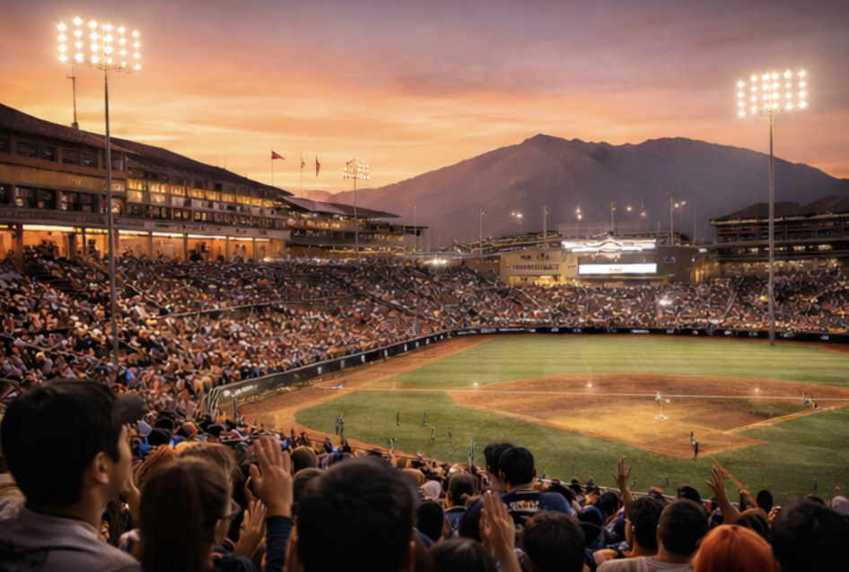
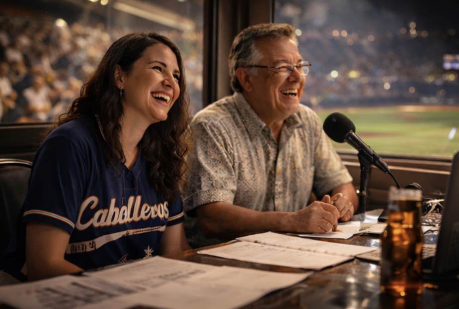
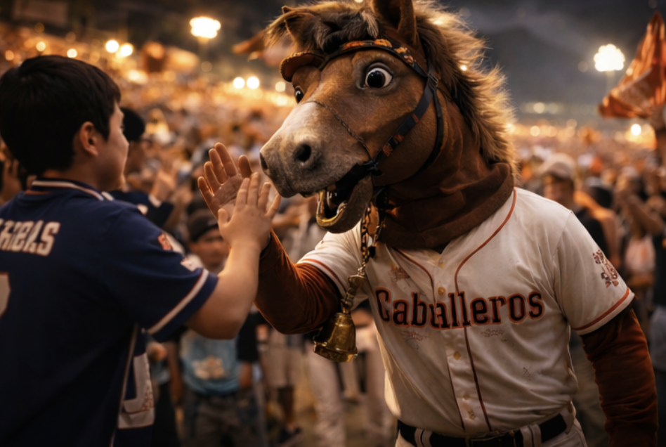
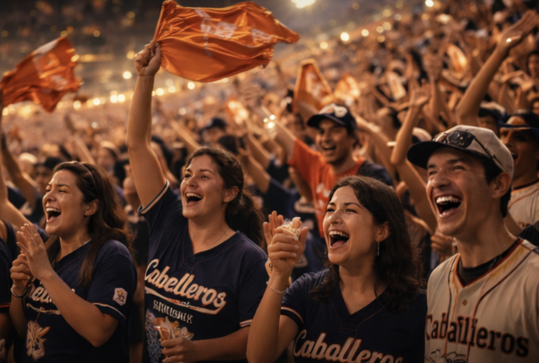

The Caballeros play like a street parade that refuses to end. They’re fast in short bursts, loud when it matters, and built around timing—small cues, sudden moves, late surges. Santiago doesn’t do doom. It does heat, rhythm, and control under pressure. When the crowd starts to clap in unison, the game tilts.

Estadio del Cobre. Brick terraces, metal railings warm from the sun, and an Andes silhouette that makes even routine fly balls feel ceremonial. The lights come on late, not early—Santiago prefers to let the sky do the work.

Voices of Santiago. Rojas runs clean, sharp play-by-play; Verdugo drifts into culture, music, and micro-stories about neighborhoods you’ll never visit—but somehow remember. The booth feels open-air even when it isn’t.

A real, human-worn horse-head costume with scuffs and stitching—beloved because it’s imperfect. El Caballito lives on the rail, collecting high-fives and starting chants like it’s a second job.

Families, teens, old heads, and kids with rally towels—more rhythm than rage. You’ll see copper accents, charms on lanyards, and a lot of hands moving at once.
| SS | Renzo “Paso” Alarcón |
| CF | Mateo “Luz” Quiroga |
| P | Iván Serrano |